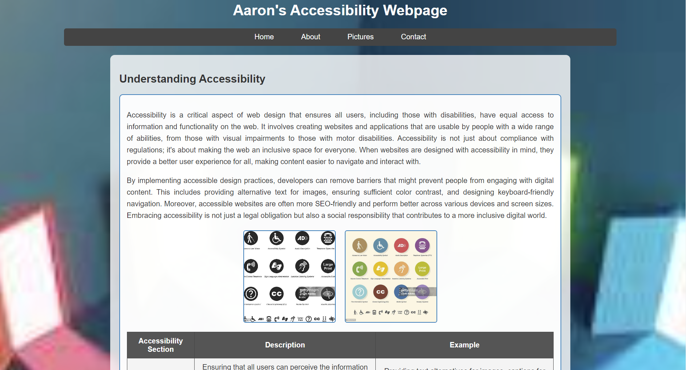
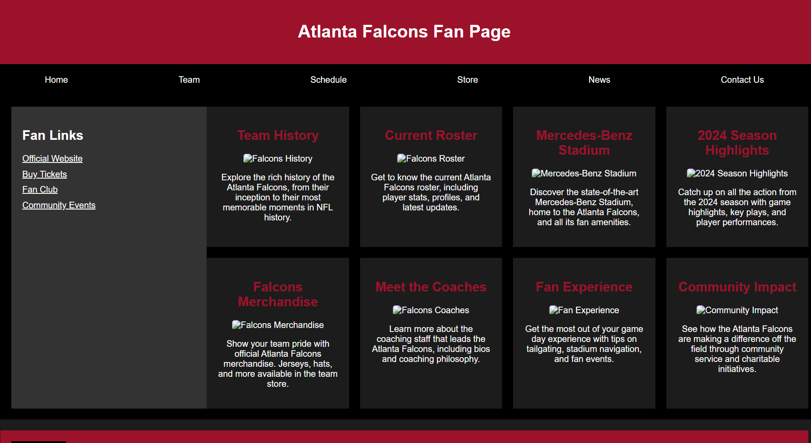
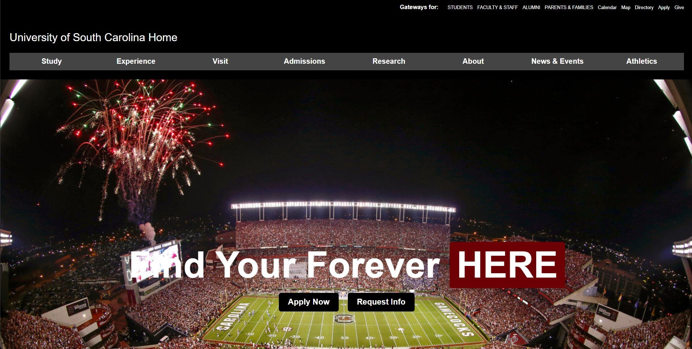

Assignment 1 – Basic HTML

For this assignment, I created a website on a classroom-appropriate topic of my choice. The project required me to structure the HTML code correctly, starting with the Doctype declaration and including all necessary elements...
Assignment 2 – Basic CSS
In this assignment, I got hands-on with CSS to style a simple HTML page. I learned how to change the look and feel of a webpage by adjusting things like colors, fonts, and layout...
Assignment 3 – Page Layout
In this assignment, the focus was on creating a single webpage that effectively utilizes CSS Flexbox for layout. The webpage was structured to show an Atlanta Falcons scheduling and informational page...
Assignment 4 – Page Layout
In this assignment, I recreated the University of South Carolina's homepage to the best of my ability...